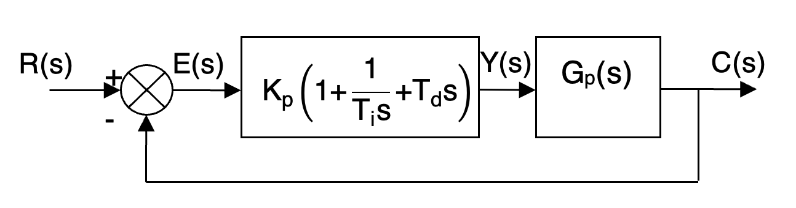

El controlador o regulador constituye el elemento fundamental en un sistema de control, pues determina el comportamiento del bucle, ya que condiciona la acción del elemento actuador en función del error obtenido al realimentar el sistema.
La forma en que el regulador genera la señal de control se denomina acción de control. Algunas de estas acciones se conocen como acciones básicas de control, mientras que otras se pueden presentar como combinaciones de las acciones básicas.
Las acciones básicas de control son tres:
- Acción Proporcional (P): se envía al sistema una señal proporcional al error.
- Acción derivativa (D): se envía al sistema una señal proporcional a la derivada del error respecto al tiempo.
- Acción integral (I): se envía al sistema una señal proporcional a la integral del error en el tiempo.
Los controladores pueden llevar a cabo una sola acción básica o una combinación de varias. Nosotros vamos a estudiar en concreto los controladores de cada acción básica más el controlador más genérico, que combinaría las 3 acciones: el controlador proporcional-integral-derivativo (PID).
El controlador de acción proporcional (P)
En este regulador la señal de accionamiento es proporcional a la señal de error del sistema. Si la señal de error es grande, el valor de la variable regulada es grande y si la señal de error del sistema es pequeña, el valor de la variable regulada es pequeño.
Es el más simple de todos los tipos de control y consiste en amplificar la señal de error antes de aplicarla a la planta o proceso. La salida del controlador, dada una señal de error que puede variar en el tiempo e(t) será:
| \[y(t)=K_{p}e(t)\] |
Pasando esa expresión al dominio de Laplace tenemos:
| \[Y(s)=K_{p}E(s)\] |
Por tanto, la función de transferencia de este tipo de control (Y(s)/E(s)) se reduce a una variable real Kp, denominada ganancia proporcional, que determinará el nivel de amplificación del elemento de control.
En la mayoría de los casos, los valores de la ganancia proporcional solo serán óptimos en una determinada porción del rango total de control:
- Si la ganancia proporcional es demasiado elevada el controlador provoca grandes cambios en el elemento actuador frente a ligeras desviaciones de la variable regulada, pudiéndose producir inestabilidad.
- Si la ganancia proporcional es demasiado pequeña, la respuesta del controlador será demasiado débil y produciría una regulación no satisfactoria.
Una propiedad importante del regulador P es que, como resultado de la rígida relación entre la señal de error del sistema y la variable regulada, siempre queda alguna señal de error del sistema. El controlador P no puede compensar esta señal de error remanente (permanente) del sistema (señal de OFFSET). El regulador de acción proporcional responderá bien a las necesidades operativas, sólo si el error que se produce es tolerable.
La parte proporcional no considera el tiempo, por lo tanto, la mejor manera de solucionar el error permanente y hacer que el sistema contenga alguna componente que tenga en cuenta la variación respecto al tiempo, es incluyendo y configurando las acciones integral y derivativa.
El controlador de acción integral (I)
En un controlador integral, la señal de salida de este varía en función del error y del tiempo en que se mantiene el mismo o, dicho de otra manera, el valor de la acción de control es proporcional a la integral de la señal de error.
Mientras que en el control proporcional no influía el tiempo, sino que la salida únicamente variaba en función de las modificaciones de la señal de error, en este tipo de control la acción varía según la desviación de la salida y el tiempo durante el que esta desviación se mantiene.
La salida de este regulador en el dominio temporal es la siguiente:
| \[y(t)=K_{i}\int_{0}^{t}e(t)dt\] |
Donde Ki es un valor real que seleccionaremos según la velocidad de respuesta que queramos (a mayor Ki, mayor velocidad de respuesta del controlador).
Si pasamos la anterior ecuación al dominio de Laplace, y recordando que la transformada de Laplace de una integral equivale a dividir entre la variable compleja "s" la transformada de Laplace de la función sin integrar, tendremos que:
| \[Y(s)=K_{i}\frac{E(s)}{s}\] |
Y, por lo tanto, la función de transferencia del bloque controlador integral será:
| \[\frac{Y(s)}{E(s)}=\frac{K_{i}}{s}\] |
El problema principal del controlador integral radica en que la respuesta inicial es muy lenta, y hasta pasado un tiempo, el controlador no empieza a ser efectivo. Sin embargo, elimina el error remanente que tenía el controlador proporcional.
El controlador proporcional-integral (PI)
En realidad no existen controladores que actúen únicamente con acción integral, siempre actúan en combinación con reguladores de acción proporcional, complementándose los dos tipos de reguladores.
Primero entra en acción el regulador proporcional (casi instantáneamente) mientras que el integral actúa durante un intervalo de tiempo.
La Función de transferencia del bloque de control PI responde a la suma de la función de transferencia de un controlador tipo P más la de uno tipo I:
| \[\frac{Y(s)}{E(s)}=K_{p}+\frac{K_{i}}{s}\] |
Controlador de acción derivativa (D)
Este controlador genera su señal de salida de manera proporcional a la velocidad con que va variando el error. Por lo tanto, es proporcional a la derivada del error respecto del tiempo.
La ecuación de la señal de control será:
| \[y(t)=K_{d}\frac{de(s)}{dt}\] |
Aplicando la transformada de Laplace a la ecuación anterior, y recordando que en el dominio de Laplace derivar equivale a multiplicar por la variable compleja "s", tenemos:
| \[Y(s)=K_{d}sE(s)\] |
Y, por consiguiente, la función de transferencia del bloque controlador derivativo será:
| \[\frac{Y(s)}{E(s)}=K_{d}s\] |
En este tipo de controladores, debemos tener en cuenta que la derivada de una constante es cero y, por tanto, en estos casos, el control derivativo no ejerce ningún efecto, siendo únicamente útil en los casos en los que la señal de error varía en el tiempo de forma continua. Este tipo de controlador se utiliza en sistemas que deben actuar muy rápidamente, puesto que la salida está en continuo cambio.
La utilidad de este tipo de controlador radica en aumentar la velocidad de respuesta de un sistema de control, ya que, como se comentó en los controladores proporcionales, aunque la velocidad de respuesta teórica de un controlador proporcional es instantánea, en la práctica no es así.
El controlador PD
La acción derivativa por sí sola no se utiliza puesto que, para señales lentas, el error producido en la salida en régimen permanente es muy grande y si la señal de mando deja de actuar durante un tiempo largo la salida tenderá hacia cero y no se realizará entonces ningún control. Así, siempre suele utilizarse en combinación con un controlador proporcional, formando lo que se conoce como un controlador proporcional-derivativo (PD).
La salida del bloque de este controlador responde a la siguiente ecuación:
| \[y(t)=K_{p}e(t)+K_{d}\frac{de(s)}{dt}\] |
Pasando al dominio de Laplace y despejando, la función de transferencia del controlador PD será:
| \[\frac{Y(s)}{E(s)}=K_{p}+K_{d}s\] |
Al actuar conjuntamente con un controlador proporcional las características de un controlador derivativo, provocan una apreciable mejora de la velocidad de respuesta del sistema, aunque pierde precisión en la salida (durante el tiempo de funcionamiento del control derivativo). Esta pérdida de precisión se puede corregir incorporando a este controlador una acción integral, formando un controlador PID.
El controlador PID
Aprovecha las características de los tres reguladores anteriores de forma que, si la señal de error varía lentamente en el tiempo, predominan las acciones proporcional e integral y, si la señal de error varía rápidamente, predomina la acción derivativa.
Este controlador tiene la ventaja de tener una respuesta más rápida y una inmediata compensación de la señal de error en el caso de cambios o perturbaciones. Tiene como desventaja que el bucle de regulación es más propenso a oscilar y los ajustes son más difíciles de realizar.
La salida del regulador viene dada por la siguiente ecuación:
| \[y(t)=K_{p}e(t)+K_{i}\int_{0}^{t}e(t)dt+K_{d}\frac{de(t)}{dt}\] |
Esta ecuación se suele expresar mediante otras constantes con Ti y Td:
| \[y(t)=K_{p}e(t)+\frac{K_{p}}{T_{i}}\int_{0}^{t}e(t)dt+K_{p}T_{d}\frac{de(t)}{dt}=K_{p}\left( e(t)+\frac{1}{T_{i}}\int_{0}^{t}e(t)dt+T_{d}\frac{de(t)}{dt} \right)\] |
Donde las constantes Ti y Td se denominan, respectivamente, tiempo integral y tiempo derivativo (o de adelanto).
Pasando al domino de Laplace y despejando, podemos expresar la función de transferencia de un controlador PID:
| \[\frac{Y(s)}{E(s)}=K_{p}\left( 1+\frac{1}{T_{i}s}+T_{d}s \right)\] |
El control, como siempre, se realizará en bucle cerrado:

Recapitulando, la función de cada uno de los tipos de acciones será la siguiente:
- Acción P: sirve para "hacer reaccionar al sistema" para que elimine el error. A mayor error, más enérgicamente se actuará sobre el sistema para que reaccione. Así pues, sirve para accionar el sistema.
- Acción I: sirve para "afinar" la respuesta del sistema para que desaparezca el error en régimen permanente, aunque tarda un tiempo en hacer efecto. Así pues, sirve para eliminar el error en régimen permanente.
- Acción D: sirve para "acelerar" la acción sobre el sistema de manera que la reacción sea más rápida. Corremos el peligro de sobre-reacionar y provocar inestabilidades si la acción derivativa es demasiado enérgica. Así pues, sirve para aumentar la velocidad del control.
Como ejemplo de un sistema de control PID, podemos poner la conducción autónoma de un automóvil:
- Cuando el controlador da una orden de cambio de dirección, en una maniobra normal, la acción de control predominante del sistema es la proporcional, que aproximará la dirección al punto deseado de forma más o menos precisa.
- Una vez que la dirección esté cerca del punto deseado, comenzará la acción integral que eliminará el posible error producido por el control proporcional, hasta posicionar el volante en el punto preciso. Si la maniobra es lenta, la acción derivativa no tendrá apenas efecto.
- Si la maniobra requiere mayor velocidad de actuación, la acción de control derivativo adquirirá mayor importancia, aumentando la velocidad de respuesta inicial del sistema y posteriormente actuará la acción proporcional y finalmente la integral.
- En el caso de una maniobra muy brusca, el control derivativo tomará máxima relevancia, quedando casi sin efecto la acción proporcional e integral, lo que provocará muy poca precisión en la maniobra (volantazo de emergencia) y podría provocar incluso una salida de la vía para evitar una colisión. El sistema se volvería inestable y habría que realizar una frenada de emergencia.